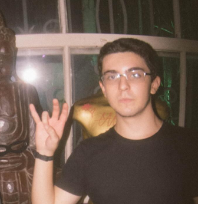
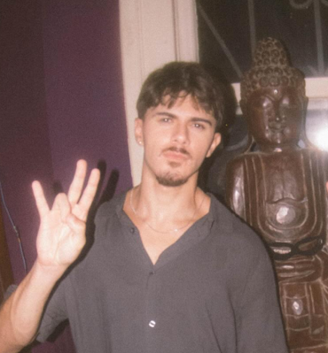

QUEM SOMOS NÓS
Nós somos Os Menor do Grajaú. Nascemos no bairro, crescemos na rua, e hoje a gente faz música e arte que é a cara da nossa história. Cada batida, cada pixel, cada palavra é sobre nós, sobre quem a gente é e de onde a gente veio. O Grajaú não é só um lugar — é nossa identidade.
Esse site é nosso quintal virtual. Aqui cê encontra nossas música, as imagem que a gente criou, os post com as novidade, e um monte de bagulho webcore que a gente curte. Se liga, vem com a gente, porque isso aqui é só o começo.
OS CARA

menor isaac
Um dos Menor do Grajaú. Responsável pela visão, pelo design, pela estética do bagulho. É quem tá por trás desse site, das edições bitmap, e de grande parte da identidade visual da banda. Se não fosse por ele, esse site não existia.

menor mike
O outro Menor do Grajaú. A alma musical da parada, o som, a batida, a rua. Juntos, eles formam a essência do que é Os Menor do Grajaú — amizade, música e verdade.
A BANDA
É NÓIS, É NÓS, É OS MENOR